Marve AfoProduct designer
Designing AI Managers Could Trust
T.L.D.R.
Redesigned VML's peer feedback tool so employees always knew where they stood, and turned an AI summary concept into a human-assisted interface managers trusted.
- Won 3 Awards
- Lauded by C-Suite Leadership
Role
Sole product and visual designer
reporting to the Global Director of Talent and Org Effectiveness.
Key Stakeholders
- Product Manager: Global Director, Talent and Org Effectiveness
- Brand Sign-Off: Executive Director, Global Marcomms
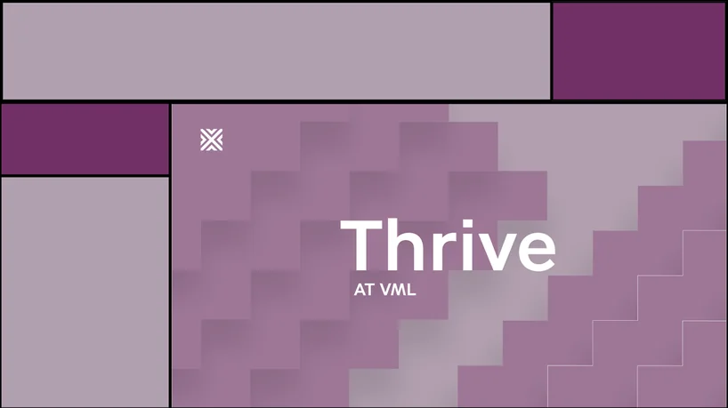
I created this GIF as part of the marketing materials used to promote 1 of Thrive’s more recent iterations.
The Problem
“Where Was I?”
A Process Spread Too Thin to RememberThrive came to VML through the 2023 merger with Wunderman Thompson: a custom Power App running inside Microsoft Teams. It guided employees through a year of feedback and performance conversations in steps spaced weeks apart. Each time people returned, they had to figure out where they'd left off, and the circular diagram, showing every step at once, didn't make that easy. Managers had it worse, reading five or more long feedback submissions per employee before every conversation. The product manager wanted AI to lighten that load.
Before
Original Thrive Home Screen
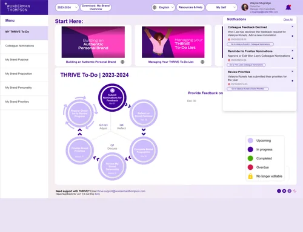
After
Redesigned Thrive Home Screen
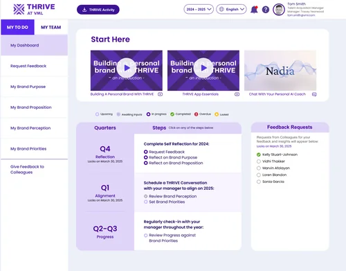
The Brand Had to Stand on Its Own
Thrive's original look belonged to a company that no longer existed. My PM's first idea was a three-way sub-brand system uniting VMLY&R's Drive Your Career, Wunderman Thompson's Authentic Personal Brand, and Thrive. I explored directions built on fingerprints for authenticity, vines for growth, and fragments of the VMLY&R snowflake. In the end, the Executive Director of Global Marcomms narrowed the work to one new VML-aligned palette, which set the direction for every screen.
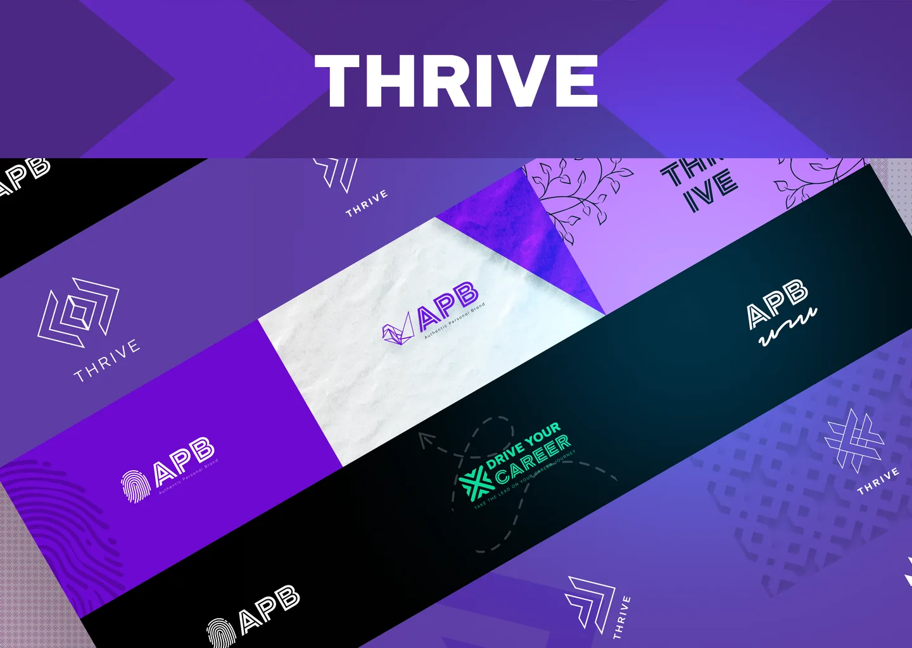
- Test
- Redesign Decisions
- Prototype AI
- Onboard
Testing
What Users Told Us
I wrote the test plan and ran four 45-minute moderated sessions with my PM, serving as the primary note taker. The findings were consistent. People weren't sure where to start, and they could jump into any step regardless of what they'd completed. Some didn't recognize the onboarding videos as videos, clicking the language and download icons instead of play, because nothing on the card said "watch this."
User Testing Notes
A sample of rough user test observation notes
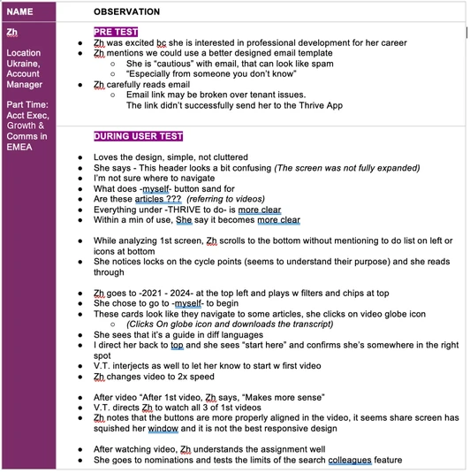
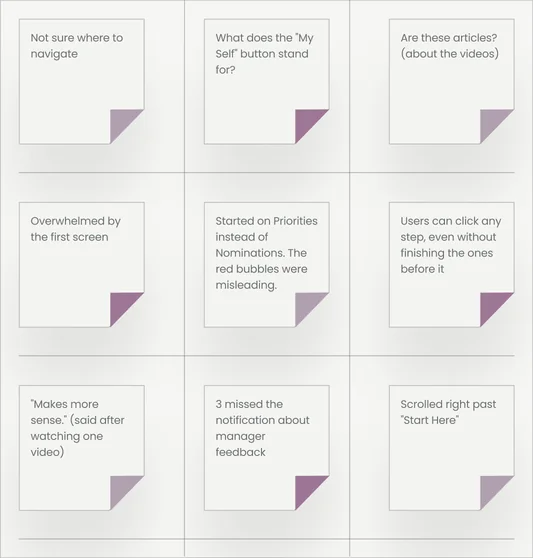
Fewer Buttons Made the Starting Point ClearTesters didn't know where to start. I moved the view switcher into sidebar tabs and folded Resources, Help, and support contacts into one "?" icon.
A Moving Bell Made Reminders Hard to MissTesters missed key notifications, so I animated the bell to flag anything new.
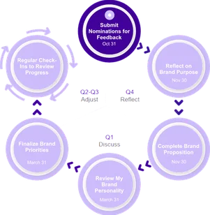
Built for
Return Visits
A Table Made Progress TrackableA wheel explains a process but is hard to track. A table shows returning users exactly where they left off laid out from left to right, top to bottom in natural reading order.
Locking Future Steps Kept Users on TrackTesters could click into any step, even ones they weren't ready for. Now only the current step is clickable, so users can't go the wrong way. (Highlighted in yellow)
Clearer Statuses Showed What Needed AttentionSix statuses, a feedback request checklist, and each quarter's lock date put everything due in one view.
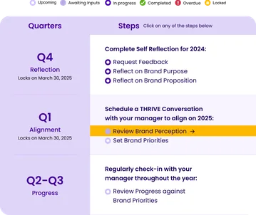
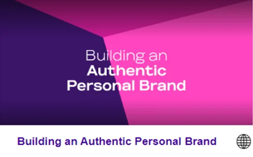
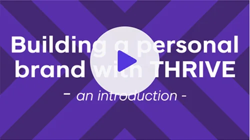
Building A Personal Brand With THRIVE
Play Buttons Made Videos Look Like VideosTesters mistook the videos for articles. Each card now has a title, a play button, and a video icon.
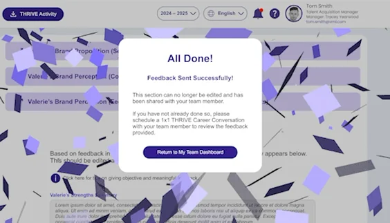
Confetti Confirmed the Finish LineTesters missed the message telling them they were done, so a celebratory animation now makes the end of each cycle unmistakable.
Prototype
AI Summaries Managers Trusted
My PM explained the initial flows. I refined them and turned them into real Figma mockups across multiple rounds. Managers read every submission first, generating a summary was optional, and they could edit it before using it. Employees and managers both knew where AI was involved. This process saved managers time on reading and manually combining and summarizing feedback from as many as 10 direct reports.
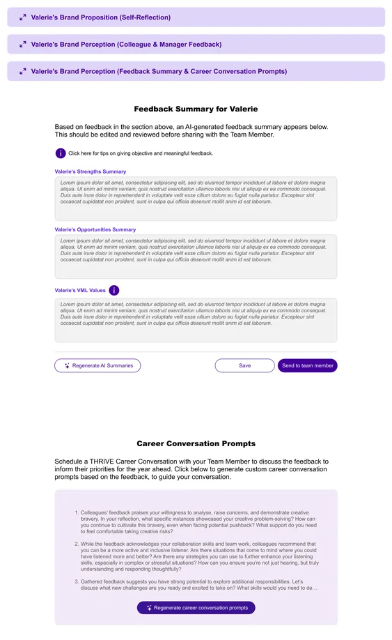
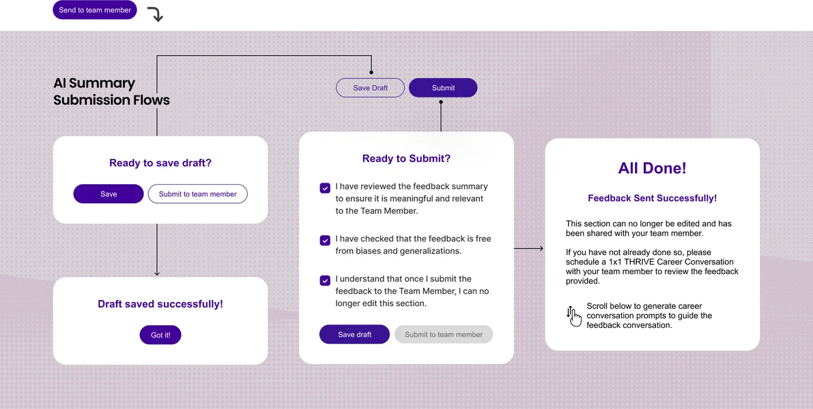
Onboarding
1 Video Led to 10 More
I produced the first 3 onboarding videos with on-screen callouts showing exactly where to look. A production team used those 3 initial videos as the template for the remainder of Thrive tutorial videos.
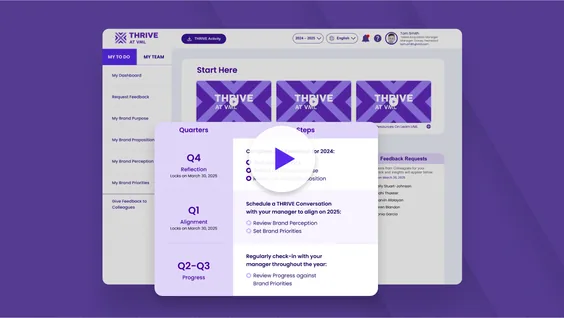
Recognition
“Human-Assisted, Not Human-Replacing”
“A brilliant and practical use of AI… With 10 direct reports it’s a time-saver... the perfect example of Human-assisted not Human-replacing.”— Global Chief Strategy Officer
WorkLife Awards 2024Most Dedicated to Employee Growth
WorkLife Finalist 2024Best Use of AI in the Workplace for Thrive's AI coach and AI-generated feedback features.
Business Culture Awards 2024Best Personal Development, Coaching & Mentoring Initiative
Engage Awards 2024Best Use of Technology to Drive Employee Engagement
Reflection
Confident,
But Not Confirmed
What I'd Do DifferentlyI'd push for a quick validation round before launch. Development time was expensive, but testing a Figma prototype wasn't. Even two or three sessions would have confirmed the redesign fixed what the first four found. The feedback from managers suggests it did. I'd just rather have known before launch.